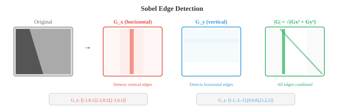
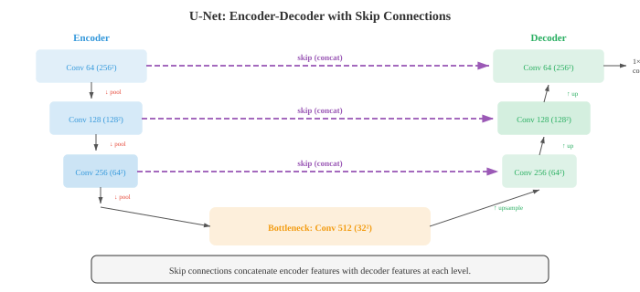
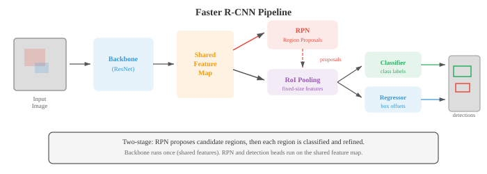

Maths, CS & AI Compendium · Chapter 08
Gradients, Scale, Structure
Chapter 07 had one exact bridge and spent the chapter earning it. This chapter has the opposite problem: there are so many that the difficulty is choosing. An image is a scalar field sampled on a regular grid, and almost everything done to it in the first half of this chapter is something you have done to a temperature field or a stress field.
The headline is in §02. The structure tensor of an image is a stress tensor. It is a symmetric \(2\times2\) matrix, its eigenvalues are principal values, its invariants are the trace and the determinant, and the whole classification of flat versus edge versus corner is read off Mohr's circle exactly as you read a stress state. That object appears twice in this chapter under two different names — Harris corner detection in §02 and Lucas–Kanade optical flow in §10 — and it is the same matrix both times.
Three more hold exactly. Gaussian blur is the heat equation (§03), with \(\sigma^2=2t\) — blurring an image is letting it diffuse, and scale space is a time axis. A ResNet block is forward Euler with step size one (§05). And the smooth-L1 loss is an elastic–perfectly-plastic material law (§07): Hookean below yield, constant restoring force above, which is precisely why it is robust to outliers.
Where this chapter stops being mechanics is later than you would expect, and §12 marks the line. The short version: everything up to the point where filters stop being designed and start being fitted is yours already.
The bridge
This is the densest bridge table in the series so far, and almost all of it is green. That is not enthusiasm; classical computer vision was built by people solving partial differential equations on grids, and it shows.
| What you already know | What vision calls it | How good is the match? |
|---|---|---|
| Stress tensor, principal stresses, Mohr's circle (Ch 01 §07) | Structure tensor, Harris corners | Identical object. Same eigenvalue algebra, same invariants. See §02. |
| Heat equation \(\partial u/\partial t=\nabla^2u\) | Gaussian blur, scale space | Exact, with \(\sigma^2=2t\). See §03. |
| Central-difference stencil | Sobel operator | Exact, and separable: rank 1. See §01. |
| Nyquist, aliasing, anti-alias filtering | Pooling, striding, downsampling | The same failure, for the same reason. See §04. |
| Banded Toeplitz matrix (Ch 02 §04) | Convolution layer | Exact. Convolution is that matrix multiply. See §05. |
| Forward Euler, \(y_{k+1}=y_k+hf(y_k)\) | ResNet block, \(x+F(x)\) | Identical, with \(h=1\). See §05. |
| Multigrid V-cycle, restriction and prolongation | U-Net encoder–decoder | Same structure, including the skip connections. See §06. |
| Elastic–perfectly-plastic law, yield force | Smooth L1 / Huber loss | Exact. The gradient saturates at yield. See §07. |
| Material derivative \(D\phi/Dt=0\), advection | Optical flow constraint | The same equation. See §10. |
| Beer–Lambert attenuation \(e^{-\int\kappa\,ds}\) | NeRF volume-rendering transmittance | Exact. See §11. |
| Lagrangian particle tracking, \(d\mathbf{x}/dt=\mathbf{v}\) | Flow matching, continuous normalising flow | Exact. It integrates a learned velocity field. See §09. |
| Inertia tensor and its ellipsoid (Ch 02 §07) | 3D Gaussian splat covariance | Same object, a symmetric positive-definite \(3\times3\). See §11. |
| Similar triangles | Stereo depth \(Z=fb/d\) | Exact, and derivable in one line. See §11. |
| Dimensional analysis and similitude | EfficientNet compound scaling | Superficial. A constrained fit, not a similarity law. See §12. |
| Mesh refinement converging to a solution | Training a bigger vision model | Nothing like it. See §12. |
A grayscale image is a scalar field \(I(x,y)\) sampled on a uniform grid. That sentence is the whole of this section, and it is worth taking literally, because every instinct you have about fields on grids transfers without modification. A colour image is three such fields stacked; a video is a field on a space–time grid.
The first thing anyone does to such a field is differentiate it. Edges are where \(\|\nabla I\|\) is large, and the standard estimator is the Sobel operator:
Read \(G_x\) column by column and it is \([-1,0,1]\) — the central-difference stencil for \(\partial/\partial x\), the same three numbers you write down for any second-order accurate first derivative. Read it row by row and it is \([1,2,1]\), a binomial smoothing stencil. Sobel is a central difference in one direction and a smooth in the other, which is exactly what you would build to differentiate noisy field data.
\(G_x\) is the outer product \([1,2,1]^{\mathsf T}[-1,0,1]\), so it is a rank-1 matrix: its singular values are \((3.464,\,0,\,0)\). That is not a curiosity, it is a cost argument. A separable \(k\times k\) filter can be applied as two \(1\times k\) passes, costing \(2k\) multiplies per pixel instead of \(k^2\). The same factorisation appears again in §05 as the depthwise separable convolution that makes MobileNet cheap, and again as the 2-D Gaussian, which is separable for the same reason.
From the two gradient components you get magnitude \(\sqrt{G_x^2+G_y^2}\) and direction \(\arctan(G_y/G_x)\) — a vector field, resolved into components exactly as you would resolve any planar vector. The Canny detector adds three refinements to this: blur first to suppress noise, thin the response by keeping only local maxima along the gradient direction, and threshold with hysteresis so that a weak edge survives only if it connects to a strong one. The hysteresis is the interesting part, and it is the same device used in a Schmitt trigger: two thresholds instead of one, so a marginal signal cannot chatter across the boundary.

This is the section to read twice. Corner detection is a principal-value calculation on a symmetric second-order tensor, and you have been doing those since your second year.
The question is how to tell, from the gradients alone, whether a small patch of image is flat, lies along an edge, or sits on a corner. The Harris detector answers it by accumulating the gradient outer product over a window \(W\):
Look at what that is. It is symmetric by construction, positive semi-definite, formed as a weighted sum of outer products of a vector with itself. It is the second moment of the gradient distribution — the literature calls it the second-moment matrix, and the name is not a coincidence. You built the same object for an area when you computed \(I_{xx},I_{yy},I_{xy}\), and the same object for a body when you wrote the inertia tensor.
Everything you know about such a tensor now applies. Its eigenvalues are the principal values, obtained from the centre and radius of Mohr's circle:
That is the stress-transformation formula with \(\sigma_x,\sigma_y,\tau_{xy}\) replaced by \(\sum I_x^2,\ \sum I_y^2,\ \sum I_xI_y\). Nothing else changes. The eigenvectors are the principal directions, and they point along and across the dominant edge.
The classification then reads directly off the principal values, and it maps onto stress states you can name:
| Image structure | Principal values | The stress state it resembles |
|---|---|---|
| Flat region | \(\lambda_1\approx\lambda_2\approx0\) | Unloaded. Mohr's circle is a point at the origin. |
| Straight edge | \(\lambda_1\gg0,\ \lambda_2\approx0\) | Uniaxial. One principal direction carries everything. |
| Corner | \(\lambda_1,\lambda_2\) both large | Biaxial. Loaded in two directions at once. |
Harris avoids computing the eigenvalues explicitly and uses a combination of the two invariants instead:
with \(k\approx0.04\)–\(0.06\). These are the first and second invariants of a \(2\times2\) symmetric tensor — the same \(I_1\) and \(I_2\) that appear in every yield criterion you have used. A corner gives large positive \(R\), an edge gives negative \(R\), a flat region gives \(R\approx0\). The Shi–Tomasi variant drops the invariant trick and uses \(\min(\lambda_1,\lambda_2)\) directly, which is more stable — and which, in stress language, is asking for the smaller principal value to clear a threshold.
You compute the structure tensor over a patch that lies on a long, straight, high-contrast edge. What do its two principal values look like?
values
(invariant 1)
(invariant 2)
verify_claims.py: the edge preset gives principal
values \((0,\,96)\) and the corner preset \((36,\,68)\).
The algebra is identical and the interpretation is not. A stress tensor is a physical object with units of force per area, obeying equilibrium: its divergence balances the body force, and that constraint links the tensor at one point to the tensor at every neighbouring point. There is a field equation.
The structure tensor obeys nothing. It is a local summary statistic of gradients in a window, with units of intensity squared, and the tensor at one pixel is under no obligation to be compatible with the tensor next door. You cannot integrate it, you cannot impose a boundary condition on it, and there is no equilibrium to check your answer against. What transfers is the eigenvalue analysis of a symmetric second-order tensor, which is a piece of linear algebra, not a piece of mechanics. That is still a great deal — it is the entire content of §02 — but it is worth being precise about which half came along.
Smoothing an image means replacing each pixel by a weighted average of its neighbours. The standard weights are Gaussian, parametrised by \(\sigma\): larger \(\sigma\), more blur. That is the operational description, and it hides the fact that this is a process you have already solved analytically.
Let the image evolve under the heat equation, treating intensity as temperature:
The solution at time \(t\), starting from \(I_0\), is \(I_0\) convolved with a Gaussian of standard deviation \(\sigma=\sqrt{2t}\). Gaussian blur is not like diffusion; it is diffusion, integrated in closed form. Blurring an image with \(\sigma=4\) is running heat conduction for \(t=8\) in units where the diffusivity is one.
SIFT and every multi-scale detector build a scale space \(L(x,y,\sigma)=G(x,y,\sigma)*I(x,y)\) — the family of all blurred versions of the image. Under the reading above, \(\sigma\) is not a filter setting. It is \(\sqrt{2t}\): scale space is a time axis, and searching across scales is watching the image diffuse and noting which features survive. Fine structure equilibrates away quickly; large structure persists. That is why features stable across scales are the meaningful ones, and it is the same argument you would make about which temperature fluctuations survive in a conducting bar.
Two consequences come free. The variance adds: blurring with \(\sigma_1\) then \(\sigma_2\) gives \(\sigma^2=\sigma_1^2+\sigma_2^2\), because diffusing for \(t_1\) then \(t_2\) is diffusing for \(t_1+t_2\). And a blurred step edge becomes an error function, \(\tfrac12\!\left(1+\operatorname{erf}(x/\sigma\sqrt2)\right)\) — the identical profile you get for a suddenly-heated half-space, which you have almost certainly plotted before under that name.
One qualification, because it is the kind that matters. Both statements are exact for the
continuous field. On a pixel grid they are approached rather than met: the discrete
Gaussian is not the continuous one, and the gap against the error-function profile falls
from about \(5\times10^{-3}\) at \(\sigma=2\) to \(6\times10^{-4}\) at
\(\sigma=6\) as the kernel becomes well resolved by the sampling. Blur narrower than a
pixel or so is not really blur, for the same reason a stencil narrower than your mesh is
not really a derivative. The convergence is checked in verify_claims.py.
You blur a perfectly sharp step edge with a Gaussian. What shape does the intensity profile across the edge take?
from sqrt(2t)
vs 2t
heat vs blur

Heat conduction is irreversible: run it backwards and small errors blow up, which is the classic ill-posed inverse problem. Deblurring an image is that backward heat problem, and it fails for exactly the physical reason you would expect. But vision routinely does something with no thermal counterpart at all: anisotropic diffusion makes the conductivity depend on the local gradient, so the image diffuses along edges but not across them. That is a material whose conductivity depends on its own temperature gradient, which is not a material. It is a useful algorithm that has quietly stopped being physics.
Every convolutional network reduces resolution as it goes deeper, by max pooling, average pooling, or strided convolution. A \(2\times2\) pool with stride 2 halves both dimensions. This is presented as a way to build translation invariance and cut computation, which it is. It is also decimation, and decimation has a rule.
You know the rule from instrumenting a machine. Sample an accelerometer at \(f_s\) and any content above \(f_s/2\) does not disappear — it folds back and appears as a lower frequency that was never there. A 700 Hz vibration sampled at 1000 Hz reads as 300 Hz. You cannot tell them apart after the fact, which is why the anti-alias filter goes before the sampler, not after.
Downsampling an image is the same operation in two dimensions, and the same failure is available. The folded frequency is
and the visible symptom is moiré — the coarse bands that appear when you photograph a fine fabric or a brick wall at the wrong distance. The texture is not in the scene; it is the sampler folding detail it could not represent.
You photograph a very fine stripe pattern and downsample the image by taking every second pixel, with no blur first. What appears in the result?
frequency
after decimation
frequency
This is one of the few places in the series where the mechanical instinct is not just transferable but corrective. Standard max pooling has no anti-alias filter in front of it. Neither does strided convolution. For most of the history of CNNs this went unexamined, and the consequence is measurable: shift an input image by one pixel and the output of a strided network can change more than it should, because the sampling grid lands differently on unfiltered high-frequency content.
Zhang's 2019 anti-aliased networks fixed it the way you would: put a low-pass filter before every downsample. Accuracy and shift-consistency both improved. An engineer who had ever mis-sampled a vibration signal would have asked the question a decade earlier, which is a reasonable argument for the whole approach of this series. The break is only that max pooling is nonlinear, so the clean linear sampling theory bounds the problem without exactly describing it.
Sections 01 to 04 used filters somebody designed. A convolutional network uses the same operation with the weights left free and fitted by gradient descent (Chapter 06). That is the entire conceptual step, and everything structural about convolution survives it.
A convolution is linear, so it has a matrix. That matrix is Toeplitz — constant along every diagonal — and banded, with bandwidth set by the kernel size. This is the matrix zoo entry from Chapter 02 §04, and it explains the two properties people quote about CNNs without deriving them. Weight sharing is the constant-diagonal structure: the same coefficient appears at every row. Translation equivariance is what a constant-diagonal operator does by definition — shift the input, the output shifts with it. You have assembled banded matrices with repeated stencils for every finite-difference problem you have solved.
The receptive field of a deep unit — the region of input that can influence it — grows by about \(k-1\) per layer. This is the domain of dependence of an explicit stencil: information travels one stencil-width per step, so after \(n\) steps it has reached \(n(k-1)\) away. VGG's argument follows immediately. Two stacked \(3\times3\) filters reach \(3+3-1=5\), exactly as far as one \(5\times5\), using \(2\times3^2=18\) weights instead of \(25\) and with an extra nonlinearity in between. Deep and narrow beats shallow and wide, for the same reason a fine stencil applied twice beats a coarse one applied once.

The residual connection is written \(\text{output}=F(x)+x\). Set it beside the explicit Euler step for \(\dot{y}=f(y)\):
They are the same recurrence with \(h=1\). A residual network is an ODE integrated by the crudest available scheme, with the right-hand side learned rather than given, and depth playing the role of integration time. This is not a loose reading — it is the basis of the neural-ODE literature, which replaces the fixed depth with an adaptive solver. It also explains the degradation problem it was invented to fix: learning a near-identity map is hard, but learning a small increment to the identity is exactly what an integrator does naturally.

The efficiency line of architectures is a factorisation story, and it is the rank-1 argument of §01 again. A standard \(k\times k\) convolution costs \(k^2C_{\text{in}}C_{\text{out}}\) multiplies per position. A depthwise separable convolution splits it into one spatial filter per channel followed by a \(1\times1\) mix, costing \(k^2C_{\text{in}}+C_{\text{in}}C_{\text{out}}\). The exact ratio is
which approaches \(k^2\) only as \(C_{\text{out}}\) grows. For \(3\times3\) with 64 output channels it is \(7.9\times\), not the \(9\times\) usually quoted; with 256 channels it is \(8.7\times\). The quoted figure is the asymptote, and the difference matters when you are budgeting a real layer. This is the springs-in-series form: two costs in parallel, the smaller one dominating.
Segmentation needs an output the same size as the input, with a label per pixel. The architecture that does this is U-Net: an encoder that halves resolution repeatedly while deepening channels, a decoder that upsamples back, and skip connections joining each encoder level to the decoder level of matching resolution.
Draw it and you have drawn a multigrid V-cycle. The correspondence is term for term:
| Multigrid | U-Net | Why |
|---|---|---|
| Restriction to a coarser grid | Pooling / strided convolution | Both halve resolution and both must filter first, per §04. |
| Prolongation back to a finer grid | Transposed convolution or bilinear upsample | Interpolation operators. Transposed convolution learns its stencil. |
| Smoothing at each level | The convolution blocks at each stage | Local operators applied a fixed number of times per level. |
| Passing the fine-grid correction across | The skip connection | The coarse solve cannot represent fine detail, so it must come from the fine level directly. |
The reason multigrid exists is the reason U-Net works. A local operator flattens high-frequency error quickly and long-wavelength error hardly at all; the fix is to move to a coarser grid where the long wavelengths are high frequency, solve there cheaply, and interpolate back. U-Net's encoder does the same thing with semantics: a global judgement about what an object is needs a wide receptive field, which is cheap at low resolution, while a sharp boundary needs fine resolution, which is only available on the finest grid. The skip connection exists because the coarse path has thrown the boundary away and cannot get it back.

Feature Pyramid Networks make the same move for detection, adding a top-down path with lateral connections so that every resolution level carries both strong semantics and usable spatial detail. Small objects are read off the fine levels, large objects off the coarse ones. In multigrid terms it is a full-multigrid cycle rather than a single V.
A V-cycle converges to the solution of a linear system you wrote down, and its convergence rate can be proved from the smoothing and approximation properties of the operators. There is a residual you can measure and drive to zero. U-Net has no residual and no system: it is fitted, it stops when training stops, and the only guarantee is held-out performance. The architectural insight transfers completely; the convergence theory does not transfer at all.
Detection asks for boxes rather than a label: what is in the image, and where. The machinery — anchors, IoU, non-maximum suppression, mean average precision — is mostly bookkeeping, and the source chapter covers it properly. One piece repays a mechanical reading.
Box coordinates are fitted by regression, and squared error is the obvious loss and the wrong one: a single badly-placed box contributes error growing as the square of its offset and dominates the gradient. The fix is smooth L1, also called the Huber loss:
Differentiate it. The gradient is \(x\) for \(|x|<1\) and \(\operatorname{sign}(x)\) beyond. That is a restoring force proportional to displacement up to a yield point, and constant thereafter. It is the elastic–perfectly-plastic law, drawn exactly as you would draw it for a mild steel bar: a straight elastic segment, a knee, then a plateau.
A quadratic loss is a linear spring with no yield: pull it far enough and the force is unbounded, so one outlier can drag the whole fit. Smooth L1 yields. Past \(|x|=1\) an outlier can exert unit force and no more, whatever its offset, so its influence on the fit is capped. Robustness to outliers and a yield stress are the same idea: bound the force any single member can transmit and the structure stops being hostage to the worst one. The loss is also \(C^1\) — value and slope both continuous at the knee — which is exactly the continuity a bilinear material model needs to avoid trouble in a solver.
The same instinct explains focal loss, which multiplies cross-entropy by \((1-p_t)^\gamma\) to suppress the contribution of the overwhelming majority of easy background anchors. Both are load-shedding: stop the many easy members, or the one extreme member, from setting the design.

One more piece of engineering sense is hiding in the anchor parametrisation. The network does not predict box coordinates; it predicts offsets from a reference box, with width and height in log space:
Predicting a small correction to a reasonable reference, rather than an absolute value, is how every incremental structural solver is posed. The log on the size is the same device as working in logarithmic strain: it makes the quantity additive, scale-invariant, and incapable of going negative.
The Vision Transformer cuts the image into \(16\times16\) patches, flattens each into a vector, projects it, and hands the resulting sequence to the transformer encoder of Chapter 07. Attention, positional embeddings and the [CLS] token all carry over unchanged; the image has been turned into a sentence.
The patch embedding is worth pausing on, because it is not new machinery: projecting non-overlapping \(P\times P\) patches through a shared matrix is exactly a convolution with kernel size \(P\) and stride \(P\). ViT's first layer is a convolution. What ViT discards is everything after it — the locality, the weight sharing across positions, the translation equivariance of §05.
That discarding has a cost with a familiar shape. A CNN's Toeplitz structure is a constraint imposed from prior knowledge: we assert that the operator is shift-invariant and local, and in exchange we need far less data to determine its few distinct coefficients. ViT drops the constraint and must recover the same structure from examples. On ImageNet-scale data CNNs win; on 300-million-image data ViT matches and then exceeds them, having learned a better operator than the one we would have imposed.
This is the modelling trade you make whenever you choose between a physics-based model with three fitted constants and a black-box regression with three hundred. The constrained model wins when data is scarce and its assumptions are right; the free model wins when data is abundant and the assumptions were costing you something.
Swin puts part of the structure back. It computes attention only within local windows, which makes cost linear rather than quadratic in image size, and shifts the window partition by half a window on alternating layers so information still crosses boundaries. It also merges patches between stages to build a resolution hierarchy, which is what makes it usable as a detection or segmentation backbone. Local coupling plus a staggered partition, assembled into a multi-resolution hierarchy, is domain decomposition with overlapping subdomains.

Diffusion models generate an image by destroying one and learning to undo the damage. The forward process adds Gaussian noise over \(T\) steps until nothing is left; the reverse process, learned, removes it a step at a time starting from pure noise.
The word invites an error that is worth heading off. In §03 the heat equation acted on the image, in pixel space, and made it smoother. Here the noise acts on the image and makes it rougher. These are opposite effects, so the same word is doing two jobs.
Both are genuinely diffusion, in different spaces. What obeys a diffusion equation in the generative case is the probability density over images: the forward process is a stochastic differential equation whose density evolves by a Fokker–Planck equation, which is a diffusion equation on distribution space. A single image gets noisier while the distribution over images spreads and smooths. Saying "diffusion models blur the image" is wrong, and it is the sort of wrong that a physical intuition confidently applied in the wrong space produces.
The reverse process is where the mechanics returns. Flow matching, which has largely replaced step-wise denoising in current systems, states the problem as transport: learn a time-dependent velocity field \(v_\theta(x,t)\) that carries samples from the noise distribution to the data distribution along smooth paths, and integrate it.
That is Lagrangian particle tracking. Given a velocity field, integrate to get the trajectory of a particle through it — the same computation as a streamline, a pathline, or any advected tracer. The optimal-transport formulation goes further and asks for the straight-line path \(x_t=(1-t)x_0+tx_1\), making the target velocity the constant \(x_1-x_0\); straight paths can be integrated in few steps, which is why rectified flows generate in one or two evaluations where DDPM needed a thousand.
The density carried by that field obeys the continuity equation \(\partial_t\rho+\nabla\cdot(\rho v)=0\) — conservation of probability, structurally identical to conservation of mass. A generative model of this kind is a mass-conserving transport problem where the target density happens to be "photographs".

Optical flow assigns a displacement \((u,v)\) to every pixel between two frames. It rests on one assumption, brightness constancy: a point keeps its intensity as it moves. Written out, \(I(x+u\,\delta t,\;y+v\,\delta t,\;t+\delta t)=I(x,y,t)\). Expand to first order and divide by \(\delta t\):
The right-hand form is the material derivative, and the statement is the advection equation: intensity is conserved following the motion. This is the same equation you write for a passive scalar carried by a flow — dye in water, a temperature marker in a duct. Brightness constancy is "intensity is a conserved passive tracer", and every limitation of optical flow follows from how badly that assumption fails when lighting changes, surfaces specularly reflect, or things move out of view.
One scalar equation, two unknowns per pixel. The component of motion along an edge produces no intensity change and is therefore invisible; only the component across the edge can be recovered. Watching a featureless pole move through a small window, you cannot tell whether it is sliding lengthwise. This is not a defect of any algorithm, it is the rank of the system.
Lucas–Kanade closes the gap by assuming the flow is constant over a small window, giving many equations for the same two unknowns and solving by least squares. The normal equations are:
That matrix is the structure tensor of §02, unchanged. The same object that told us whether a patch was a corner now decides whether the flow is recoverable, and the connection is not a coincidence: the system is solvable exactly when both principal values are large, which is the definition of a corner. Flat regions give a singular system, edges give a rank-one system, corners give a well-conditioned one. This is why feature trackers track corners. Its condition number is \(\lambda_1/\lambda_2\) — the same ratio that governs how well any least-squares fit is determined.

Tracking objects across many frames then becomes state estimation. SORT runs a Kalman filter per object with a constant-velocity motion model, predicting where each will be in the next frame and correcting with the detection when it arrives, weighted by the relative uncertainties. That is textbook sensor fusion. The assignment of detections to tracks is the Hungarian algorithm on an IoU cost matrix — a linear assignment problem of the kind that appears in job-shop scheduling.
The pinhole camera maps a world point to a pixel through the intrinsic matrix \(K\) and the rigid transform \([R\mid t]\): \(\mathbf{p}=K[R\mid t]\mathbf{P}\). This is a homogeneous coordinate transform with a rotation and a translation — the same \(4\times4\) machinery as a Denavit–Hartenberg chain, which Chapter 11 will make explicit for robot arms. The only genuinely new element is the division by \(Z\), which is what makes projection non-linear and is why distant things look smaller.
Stereo depth follows in one line of similar triangles: two cameras separated by baseline \(b\), a point appearing at disparity \(d\), and
Depth goes as the reciprocal of disparity, so precision degrades as the square of range — doubling the distance quarters the depth resolution for the same disparity accuracy. Anyone who has used a fixed-baseline optical instrument knows this trade, and it is why long-range stereo needs a long baseline.
A neural radiance field stores colour and density as a function of position and viewing direction, and renders a pixel by integrating along the ray:
\(T(t)\) is the transmittance, and its form is Beer–Lambert attenuation: the fraction of light surviving a path through an absorbing medium falls as the exponential of the integrated absorption coefficient. It is the law you use for radiation through a participating medium, for optical density, for neutron shielding. The discrete version, \(\alpha_i=1-\exp(-\sigma_i\delta_i)\) composited front to back, is the standard alpha-blending recurrence, and it is algebraically the same as accumulating the product of survival factors.
3D Gaussian splatting replaces the implicit field with explicit primitives: each is a 3D Gaussian with a mean, an opacity, a colour, and a \(3\times3\) covariance matrix setting its shape and orientation. That covariance is a symmetric positive-definite tensor whose eigenvectors are principal axes and whose eigenvalues are the squared semi-axes — an ellipsoid, specified exactly as you specify an inertia ellipsoid from the inertia tensor of Chapter 02 §07. Rendering projects each ellipsoid to a 2D ellipse, sorts by depth and blends. It is fast because rasterising ellipses is something graphics hardware has done for thirty years.
Where it breaks — the honest inventory
This chapter's bridges are unusually strong, which makes it more important than usual to say where they stop.
| The tempting claim | Status | What is actually true |
|---|---|---|
| The structure tensor is a stress tensor | holds | As algebra, exactly. Not as physics: it has no equilibrium condition, no field equation and no compatibility between neighbouring points. The eigenvalue analysis transfers; the mechanics does not. |
| Gaussian blur is the heat equation | holds | Exactly, with \(\sigma^2=2t\). But anisotropic diffusion, which is standard in vision, makes conductivity depend on the local gradient — no material behaves that way. |
| A ResNet block is forward Euler | holds | The recurrence is identical with \(h=1\). What is missing is any notion of accuracy or convergence: there is no exact trajectory being approximated, so "step size 1" cannot be called too large. |
| Diffusion models blur the image | do not | They add noise, making each image rougher. The diffusion is of the probability density over images, in distribution space, via Fokker–Planck. Same equation, different space, opposite visible effect. See §09. |
| Pooling is harmless downsampling | do not | It is decimation without an anti-alias filter, and it aliases. This one is the mechanical instinct being right and the field being late. See §04. |
| EfficientNet scaling is dimensional analysis | do not | The constraint \(\alpha\beta^2\gamma^2\approx2\) is a compute budget, not a dimensionless group, and \(\alpha,\beta,\gamma\) come from a grid search, not from the Buckingham Pi theorem. It looks like similitude and shares none of its logic. |
| A bigger model converges like a finer mesh | do not | Mesh refinement approaches a solution that exists independently of the mesh, and you can demonstrate convergence. There is no exact image-understanding function underneath being approximated, and no mesh-independence study is available. |
The last row is the same caution as Chapter 07's, and it is the one that matters most. A finite element model is an approximation to a governing equation, and refining it is justified by a convergence theorem. Training a larger vision model is justified by a held-out score. These feel similar from the inside and are epistemically nothing alike.
What this chapter does not cover
Five source files, about 1,800 lines, reduced to the correspondences that are exact. What was cut, so you know to read the source for it:
Colour science — HSV, YCbCr and LAB, chroma subsampling, and why perceptual uniformity matters. Classical features — SIFT's full pipeline, SURF, ORB, HOG, and the descriptor-matching machinery that carried the field before 2012. Architecture history — LeNet through EfficientNet is one paragraph here and a proper narrative in source file 02; Inception, DenseNet, ShuffleNet and the inverted residual get a line each at most. Detection mechanics — the R-CNN lineage, RoIAlign, anchor assignment, NMS, mAP and the anchor-free detectors. Self-supervision — SimCLR, MoCo, BYOL, DINO, MAE and BEiT, which is most of source file 04.
GANs and StyleGAN in any detail, VAEs, super-resolution, style transfer, panoptic segmentation and its quality metric, DeepLab and atrous spatial pyramid pooling, real-time segmentation architectures, video classification (C3D, I3D, SlowFast, TimeSformer, VideoMAE), action recognition, the tracking lineage beyond SORT, monocular depth estimation, point clouds and PointNet, SLAM and bundle adjustment, pose estimation, and the VR/AR rendering constraints that close source file 05.
The omissions are not uniform in kind. The classical material was cut because §01 to §04 already carry its mathematics; the self-supervision and generative material was cut because it belongs to Chapter 06 and Chapter 10 more than here; the 3D and video material was cut for length alone, and is the part most worth reading in the source.
Worked example: one problem, solved twice
Take a \(5\times5\) patch that is bright in its top-left \(3\times3\) corner and dark elsewhere — a corner, in the ordinary sense. Apply Sobel over the nine interior positions and accumulate the structure tensor. The result is
Solved as mechanics
Read it as a plane stress state with \(\sigma_x=52\), \(\sigma_y=52\), \(\tau_{xy}=16\). Mohr's circle has centre \(\tfrac12(\sigma_x+\sigma_y)=52\) and radius \(\sqrt{\left(\tfrac{\sigma_x-\sigma_y}{2}\right)^2+\tau_{xy}^2}=\sqrt{0+16^2}=16\). The principal stresses are \(52\pm16\), that is \(36\) and \(68\). Because \(\sigma_x=\sigma_y\) the circle is centred on a state of pure shear superposed on hydrostatic tension, so the principal angle is \(\tfrac12\arctan\!\big(2\tau_{xy}/(\sigma_x-\sigma_y)\big)=45^\circ\) exactly. The invariants are \(I_1=\operatorname{tr}M=104\) and \(I_2=\det M=2448\).
Solved as computer vision
Read the same matrix as a Harris structure tensor. Its eigenvalues are \(36\) and \(68\) — both large, so this is a corner and not an edge. The Harris response is \(R=\det M-k(\operatorname{tr}M)^2=2448-0.05\times104^2=1907.2\), large and positive, confirming it. Shi–Tomasi reports \(\min(\lambda_1,\lambda_2)=36\), comfortably above any sensible threshold. The major eigenvector is \([0.7071,\,0.7071]\), pointing at \(45^\circ\): the direction of steepest intensity variation runs diagonally, which is where the corner faces.
Both columns are the same arithmetic. The principal stresses and the Harris eigenvalues
are one calculation, the invariants \(I_1,I_2\) and the quantities in \(R\) are one pair of
numbers, and the principal angle and the eigenvector direction are one answer. Checked in
verify_claims.py under [Ch08 s02] and [Ch08 s14].
The lab's straight-edge preset gives \(M=\bigl[\begin{smallmatrix}96&0\\0&0\end{smallmatrix}\bigr]\) and its diagonal-edge preset gives \(M=\bigl[\begin{smallmatrix}48&48\\48&48\end{smallmatrix}\bigr]\). These have the same eigenvalues, \(0\) and \(96\) — the same uniaxial state, rotated by \(45^\circ\). The matrices look completely different and describe the same physical situation in two coordinate frames, which is the entire point of working with invariants, and exactly the lesson Mohr's circle exists to teach.
Question bank
Twenty-four prompts in three tiers. Answer aloud before opening anything.
Tier 1 — recall
What are the two invariants used in the Harris response, and what are they in eigenvalue terms?
\(\operatorname{tr}M=\lambda_1+\lambda_2\) and \(\det M=\lambda_1\lambda_2\). \(R=\det M-k(\operatorname{tr}M)^2\).
Relate the Gaussian blur width to diffusion time.
\(\sigma=\sqrt{2t}\), so \(\sigma^2=2t\). Variances add because diffusion times add.
Why is the Sobel operator separable, and what does that buy?
It is the outer product \([1,2,1]^{\mathsf T}[-1,0,1]\), so rank 1. A separable \(k\times k\) filter costs \(2k\) multiplies per pixel instead of \(k^2\).
State the optical flow constraint equation and name it.
\(I_xu+I_yv+I_t=0\), which is \(DI/Dt=0\) — the material derivative of intensity, i.e. advection of a conserved passive scalar.
What matrix does Lucas-Kanade invert?
The structure tensor from §02 — the identical matrix used for Harris corner detection.
Write the ResNet block and the forward Euler step side by side.
\(x_{l+1}=x_l+F(x_l)\) and \(y_{k+1}=y_k+hf(y_k)\). Identical with \(h=1\).
What is the transmittance in NeRF volume rendering?
\(T(t)=\exp(-\int\sigma\,ds)\) — Beer–Lambert attenuation along the ray.
Two stacked 3x3 convolutions versus one 5x5: receptive field and parameters?
Same receptive field (5), 18 parameters instead of 25, plus an extra nonlinearity.
Tier 2 — apply
A patch gives \(M=[[96,0],[0,0]]\). Classify it and give the principal direction.
Eigenvalues 0 and 96: a straight edge, uniaxial. The major principal direction is along \(x\), meaning intensity varies across a vertical edge.
Another gives \(M=[[48,48],[48,48]]\). How does it differ from the previous one?
It does not, physically. Same eigenvalues (0, 96), same uniaxial state, rotated 45°. Only the coordinate frame differs.
You blur with \(\sigma=3\), then again with \(\sigma=4\). What is the net blur?
\(\sigma=\sqrt{9+16}=5\). Variances add because the diffusion times add.
A grating at 0.4 cycles/pixel is decimated by 2. What appears?
Nyquist after decimation is 0.25, so it folds to \(|0.4-0.5|=0.1\) cycles/pixel — a much coarser pattern that is not in the scene.
Why do feature trackers track corners rather than points on edges?
The Lucas-Kanade system is the structure tensor. On an edge it is rank one, so the along-edge component of motion is unrecoverable — the aperture problem. Corners give both eigenvalues large and a well-conditioned solve.
Compute the exact speed-up of a depthwise separable 3x3 with 128 output channels.
\(1/(1/9+1/128)=8.4\times\). The commonly quoted \(9\times\) is the asymptote as channels grow.
A box-regression residual is 6 units. What gradient does smooth L1 apply?
Magnitude 1 — the yield value. Beyond \(|x|=1\) the gradient saturates, so the outlier cannot dominate the fit.
Stereo range doubles. What happens to depth precision at fixed disparity accuracy?
It falls by a factor of four. \(Z=fb/d\), so \(|dZ/dd|\propto Z^2\).
Tier 3 — judge
Is the structure tensor "really" a stress tensor?
As a symmetric second-order tensor with principal values and invariants, yes, and the whole eigenvalue analysis carries. As physics, no: no equilibrium, no compatibility, no units of stress, no field equation linking neighbouring points. The transferred part is linear algebra, and that is still most of §02.
Diffusion models are named after diffusion. How far does that take you?
Further than it first appears and in a different space than you would guess. The image gets noisier, not smoother, so pixel-space intuition from §03 misleads. What diffuses is the density over images, via Fokker-Planck. Getting this wrong is a good example of a physical intuition applied confidently in the wrong space.
Max pooling aliases. Why did it take the field until 2019 to act on this?
Because CNNs were evaluated on accuracy, and the aliasing shows up as shift-inconsistency, which nobody was measuring. A vibration engineer would have asked about the anti-alias filter immediately. It is a fair advertisement for cross-disciplinary reading — and a caution that the fix, being nonlinear, is bounded rather than described by the linear theory.
ViT drops the CNN's inductive bias. When is that the right call?
When you have enough data that the constraint costs more than it saves. It is the same trade as a three-constant physical model against a three-hundred-parameter regression: the constrained model wins when data is scarce and its assumptions hold.
Is compound scaling a similitude law?
No. \(\alpha\beta^2\gamma^2\approx2\) is a compute budget and the exponents come from grid search, not from dimensional analysis. It has the shape of a scaling law and none of the derivation, which makes it easy to over-trust.
U-Net is a V-cycle. What does that buy you, and what does it not?
It explains the architecture completely: why coarsen, why skip, why the decoder needs the encoder's fine detail. It buys no convergence theory, because there is no residual to drive to zero and no system being solved.
Which bridge in this chapter is on the weakest ground?
Probably the inertia-ellipsoid reading of a Gaussian splat. The covariance genuinely is a symmetric positive-definite \(3\times3\) with an ellipsoid, but nothing about mass distribution predicts anything about how splats are fitted or rendered. It is a shared piece of geometry, not a shared mechanism — unlike §02, §03 and §10, where the equations themselves coincide.
What would convince you this chapter's bridges are load-bearing rather than decorative?
That they make predictions. The aliasing reading predicts that anti-aliased pooling improves shift-consistency, which it does. The diffusion reading predicts \(\sigma^2\) adds under repeated blur, which it does. The structure-tensor reading predicts corners are exactly where flow is recoverable, which is why trackers use them. A decorative analogy predicts nothing.
What this feeds
| From this chapter | Where it is used next |
|---|---|
| Convolution, receptive fields, pooling | Ch 09 spectrograms, which are images; Ch 12 graph convolution on irregular meshes |
| Patch tokenisation, ViT | Ch 10 vision–language models and image tokenisation |
| Diffusion and flow matching | Ch 10 cross-modal generation; Ch 20 bleeding-edge generative models |
| Pinhole geometry, stereo, SLAM | Ch 11 autonomous systems, where these become state estimation on a moving platform |
| Structure tensor, eigenvalue classification | Ch 11 and Ch 12, wherever a local symmetric operator has to be characterised |
| Separable and depthwise convolution | Ch 16 SIMD and GPU programming; Ch 17 inference cost |
| U-Net, multigrid structure | Ch 12 graph neural networks, where coarsening a mesh is the same operation |
Do one thing: take any photograph, compute its Sobel gradients, and build the structure tensor over a sliding window. Plot \(\lambda_2\) as an image. The bright spots are the corners, and they will be exactly where you would have put tracking targets by eye. Then blur the photograph twice, with \(\sigma=3\) and \(\sigma=4\), and confirm it matches a single blur at \(\sigma=5\). Ten minutes, and both headline bridges become things you have checked rather than read.
Provenance and changes
A derivative work under Apache-2.0, which requires a statement of changes. Source
references link to the original files, pinned to commit 9850ee5. This chapter
is compressed heavily — five source files reduced to the correspondences that are
exact — and §13 is an explicit inventory of what was dropped.
| Section | Title | Source | Verdict | What changed |
|---|---|---|---|---|
| §00 | The bridge | — | added | Mapping table is mine. |
| §01 | An image is a field | 01 | expanded | Sobel and Canny as in source. The reading of Sobel as a central-difference stencil, the rank-1 separability with its cost argument, and the Schmitt-trigger reading of hysteresis are added. |
| §02 | The structure tensor | 01 | expanded | Harris, Shi–Tomasi and the eigenvalue classification follow the source. The identification with a plane stress state, the Mohr's-circle formula for the principal values, the reading of \(\det\) and \(\operatorname{tr}\) as \(I_1,I_2\), and the lab are added and verified. |
| §03 | Blur is diffusion | 01 | expanded | Gaussian filtering and scale space as in source. The heat-equation identification with \(\sigma^2=2t\), the variance-addition rule, the error-function edge profile and the reading of scale space as a time axis are added and verified. |
| §04 | What Nyquist warned you about | 02 | added | The source describes pooling and striding without mentioning aliasing. The sampling-theory reading, the fold-frequency formula, the lab and the note on anti-aliased networks are all added. |
| §05 | Learned filters | 02 | corrected | Architectures compressed drastically. The Toeplitz reading, the domain-of-dependence reading of receptive fields and the forward-Euler identity are added. Corrected: the source gives depthwise separable convolution as "approximately 9x cheaper" for a 3×3. The exact ratio is \(1/(1/k^2+1/C_{\text{out}})\), which is \(7.9\times\) at 64 output channels and \(8.7\times\) at 256; \(9\times\) is the asymptote, not the value. |
| §06 | U-Net is a V-cycle | 03 | expanded | U-Net and FPN as in source. The multigrid correspondence, term by term, is added. |
| §07 | A loss that yields | 03 | compressed | Detection machinery cut to a paragraph. The elastic–perfectly-plastic reading of smooth L1, and the incremental-solver reading of anchor offsets, are added and verified. |
| §08 | Patches, not pixels | 04 | compressed | ViT and Swin kept; DeiT, self-supervision and masked image modelling dropped. The constrained-versus-free modelling trade is added. |
| §09 | Generation as transport | 04 | expanded | Diffusion and flow matching as in source. The Lagrangian particle-tracking reading and the continuity-equation reading are added; so is the warning that the diffusion here acts on the density, not on the image. GANs, VAEs and StyleGAN dropped. |
| §10 | Motion is a material derivative | 05 | faithful | The source derives the flow constraint and states that Lucas–Kanade uses the structure tensor. Naming it the material derivative, the passive-scalar reading, and the condition-number reading of why trackers track corners are added. |
| §11 | Seeing in three dimensions | 05 | compressed | Pinhole, stereo, NeRF and splatting kept; SLAM, point clouds, depth estimation and pose estimation dropped. The Beer–Lambert identification and the inertia-ellipsoid reading of splat covariance are added. |
| §12 | Where it breaks | — | added | Mine. |
| §13 | What is missing | — | added | Mine. |
| §14 | Worked example | 01 | added | Mine, built on the source's Harris material. Every number is checked. |
| §15 | Question bank | — | added | Mine, in the three tiers agreed at Ch 05. |
| §16 | What this feeds | — | added | Mine. |
Figures marked from the compendium are reproduced unmodified from the source
repository's images/ directory. All numeric claims are checked independently
in study-companion/verify_claims.py under the [Ch08 …]
tags: Sobel separability, the structure tensor against the Mohr's-circle formula, the
invariant identities, the Harris and Shi–Tomasi responses, Gaussian blur against an
explicit heat-equation solver and against the error-function profile, the
\(\sigma^2=2t\) relation, the aliasing fold frequency, convolution against an explicit
Toeplitz matrix, the ResNet–Euler identity, the smooth-L1 gradient bound, the
Beer–Lambert transmittance recurrence, and the separable-convolution cost ratio.
Research findings and figures that go stale — benchmark numbers, model sizes
— are reported as of the source rather than asserted as current.